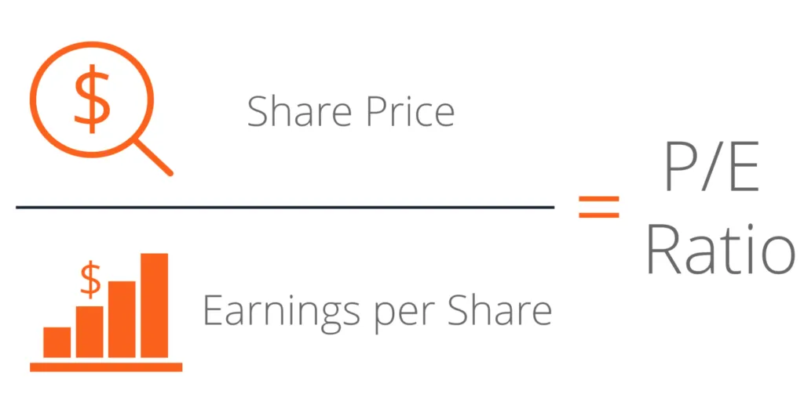
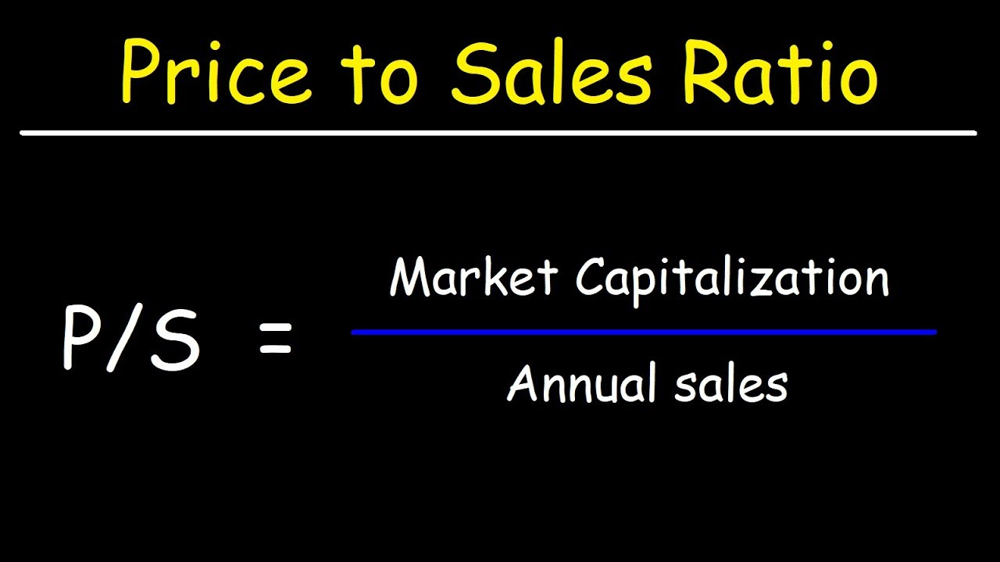
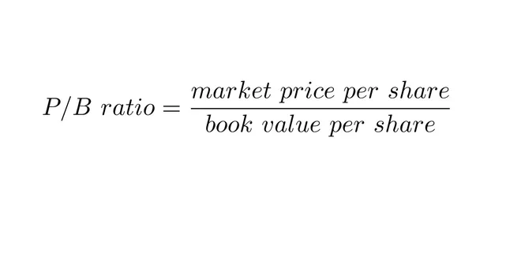
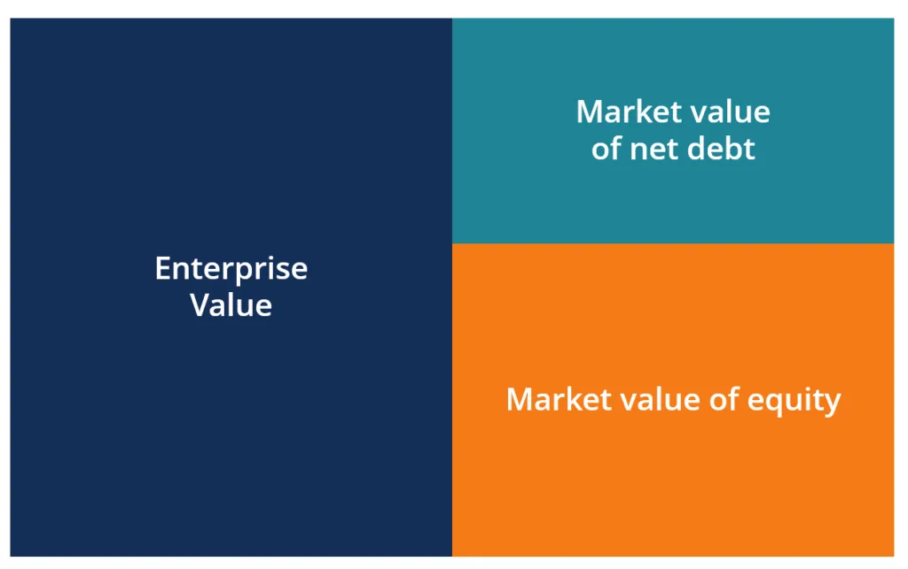
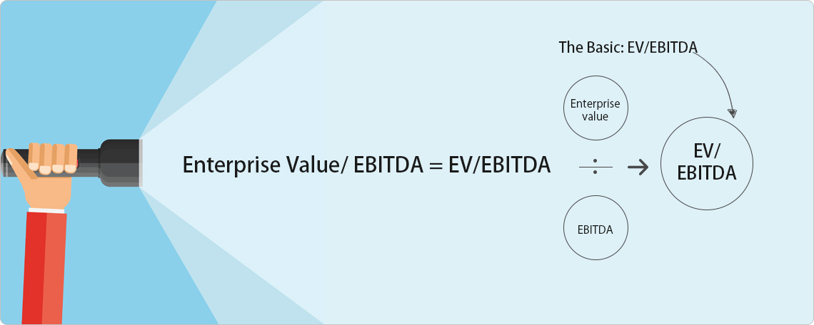
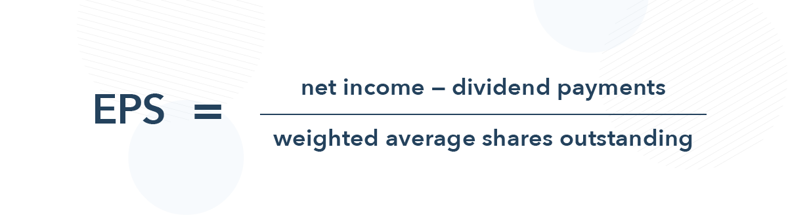

Экономика - это?
Экономика - это хозяйственная деятельность общества, а также совокупность отношений, складывающихся в системе производства, распределения, обмена и потребления.
Исторически экономика прошла длинный путь. Ее основными направлениями были меркантилизм XV-XVIII веков, физиократия второй половины XVIII века, классическая политическая экономия конца XVIII века – 30-х годов XIX века, неоклассическая экономика, возникшая в 1890-х годах, кейнсианство и монетаризм XX века. Отдельным направлением в экономике – своеобразным ее ответвлением – является марксизм.
Что такое мультипликатор?
Мультипликатор — это коэффициент (соотношение) финансовых показателей компании и (или) ее стоимости. Мультипликаторы позволяют сравнивать инвестиционную привлекательность различных по размеру, но схожих по деятельности компаний.
Существуют десятки разных мультипликаторов. Наиболее часто используют следующие:
1) P/E (price to earnings) - отношение цены к прибыли (P/E) связывает цену акций компании с ее прибылью на акцию. Высокий коэффициент P/E может означать, что акции компании переоценены, или что инвесторы ожидают высоких темпов роста в будущем.

2) P/S (price to sales) - это отношение рыночной стоимости акций компании (капитализации) к её годовой выручке. Лучше всего подходит для торговли и других отраслей, в которых с ростом выручки последовательно растёт прибыль и денежный поток. Нормальным считается значение коэффициента меньше 2. Если P/S меньше 1, то компания недооценена.

3) P/B (price to book) - отношение рыночной стоимости акций компании к стоимости её активов. Если коэффициент больше 1, то инвестор переплачивает за акции. Если меньше 1, значит, компания недооценена. Если равен 1 — компания оценена справедливо.

4) EV (enterprise value) - это мера общей стоимости компании, часто используемая как более комплексная альтернатива капитализации на фондовом рынке. Стоимость предприятия включает в свой расчет рыночную капитализацию компании, а также краткосрочную и долгосрочную задолженность, а также любые денежные средства на балансе компании.

5) EV/EBITDA - соотношение справедливой стоимости компании к прибыли до выплаты налогов, дивидендов и расходов на амортизацию. Мультипликатор позволяет сравнивать компании из разных отраслей, например, нефтегазовую корпорацию и ретейл. Чем меньше показатель, тем привлекательнее компания.

6) EPS (earnings per share) - прибыль на акцию (EPS) рассчитывается как прибыль компании, деленная на количество находящихся в обращении ее обыкновенных акций. Полученное число служит показателем прибыльности компании. Обычно компании сообщают о прибыли на акцию, которая скорректирована с учетом чрезвычайных обстоятельств и потенциального разводнения акций.

Ключевые экономические факторы
Производство — процесс изготовления материального блага с помощью факторов производства, которое имеет определенную ценность в данных обстоятельствах.
Потребность - это необходимость в чем-либо для поддержки и развития жизни человека и общества в целом. Удовлетворение потребностей — главный мотив для реализации экономической деятельности.